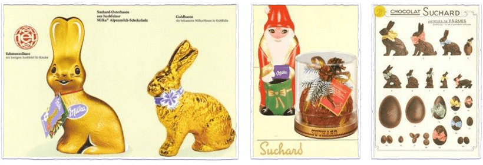
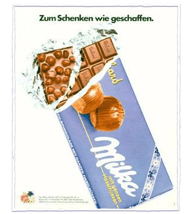

Milka - het verhaal van het merk


Ongeveer 120 tedere momenten
Start1826
Philippe Suchard begon chocolade te produceren in zijn geboortestad Serrieres bij Neuchâtel.

1901
Het geboortejaar van MILKA. Inschrijving van het merk in het handelsregister van het “Keizerlijk Agentschap voor Patenten” in Berlijn. De naam is een samenvoeging van de belangrijkste ingrediënten, melk en cacao. Sinds het begin is de verpakking paars.

1909
1909 werd milka voor de eerste keer in duitsland geproduceerd en verkocht.

1909
1909 werd milka voor de eerste keer in oostenrijk geproduceerd en verkocht.

1913
De vraag groeit. Milka's populariteit neemt steeds meer toe. In 1913 produceerde de fabriek in Lörrach 18 keer meer chocolade dan in 1880.
1922
Het Milka logo is nu groter en goudkleurig.

1926
Milka lanceert seizoenproducten
1950
Nieuwe verpakking! De Milka-verpakking verandert weer: het logo is nu wit, de achtergrond is paars.

1962
Het milka-logo wordt een geregistreerd merk.

1964
Officieel lila, Lila wordt de officiële merkkleur.
1972/1973
In 1972 werd de MILKA koe gecreëerd en in 1973 wordt ze de centrale figuur voor elke MILKA reclame.

1977
Milka groeit verder! Sinds 1977 zijn de repen ook verkrijgbaar in grote repen van 200g en nog grotere repen van 300g.
1986
Milka lanceert nieuwe merken. Nussini en de Lila Pause maken nu deel uit van het Milka-assortiment

1987
Milka is er nu ook in hartvorm.

1988
Milka is er nu ook in hartvorm.

1995
Milka wordt skisponsor hier: Alpen, Zwitserland: De opblaasbare Milka-koe verschijnt voor het eerst op de FIS Alpin Cup in Lienz. Dat maakte Milka tot een van de bekendste sportsponsors.
1998
De MILKA koe viert zijn 25e verjaardag.

2001
MILKA wordt 100 jaar.
2003
De MILKA koe viert haar 30 jaar.
2007
Milka helpt u milieuvriendelijker te worden. Milka is nu verkrijgbaar in de milieuvriendelijke flowpack, zonder aluminiumfolie.

2011
De nieuwe campagneslogan wordt gelanceerd: Durf teder te zijn.
2012
MILKA verkent nieuwe categorieën. Vanaf nu kun je de tedere MILKA chocolade terugvinden in een brede waaier van producten : koekjes, chocoladedrank, ijs en vele andere.
2016
Milka "Teder van binnen" - de nieuwe merkhandtekening maakt duidelijk dat er in elke persoon "tederheid" zit, net als in de tedere Milka Alpenmelkchocolade.
2018
De Milka-letters krijgen een moderne look en feel.

2018
De Milka-tabletten zijn nu op de markt verkrijgbaar in matte folie. De nieuwe verpakking voor de tabletten laat duidelijk de verscheidenheid aan Milka-producten zien. De achterzijde met de ingrediënten en voedingswaarden in grotere letters biedt consumenten uitgebreide informatie over de producten.

2019
Milka haalt 100% van de cacao die het merk nodig heeft voor chocolade uit het duurzaamheidsprogramma van Mondelēz International, Cocoa Life.
2020
Milka lanceert de maak de Nieuwe Milka smaak campagne in Nederland.